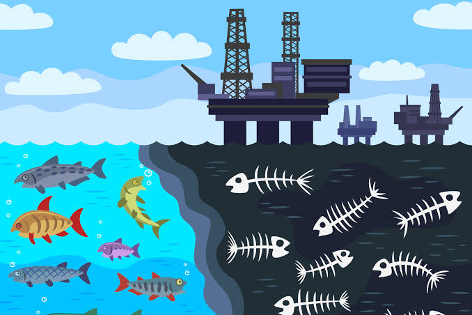
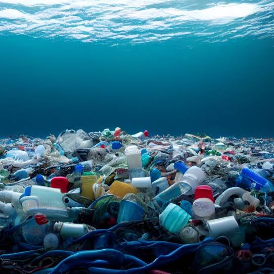
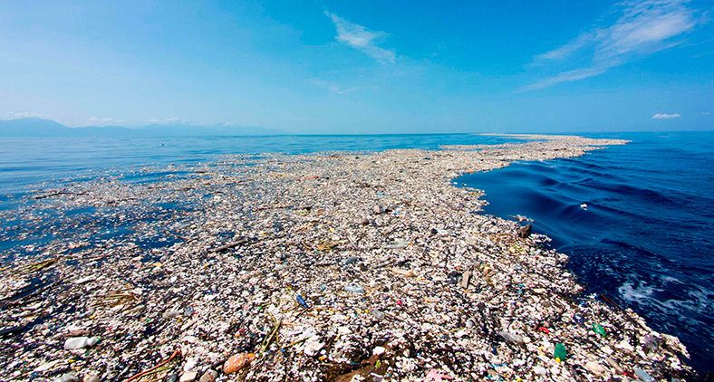

O fundo do mar não deveria guardar o teu lixo! 👎



- 📢 Derrames de Petróleo acidentes em plataformas offshore (no mar) e navios petroleiros libertam milhões de litros de crude diretamente na água. Estes desastres contaminam as penas das aves e o pelo dos mamíferos, destruindo a sua capacidade de isolamento térmico, além de envenenar peixes e corais com substâncias altamente tóxicas.
- 📢 Poluição Sonora subaquática a pesquisa de novas reservas de petróleo utiliza testes sísmicos com canhões de ar de alta potência. O ruído ensurdecedor destes testes viaja milhares de quilómetros debaixo de água, desorientando e ferindo gravemente mamíferos marinhos (como baleias e golfinhos) que dependem da ecolocalização para caçar e comunicar.
- 📢 Produção de Plástico O plástico é um derivado direto do petróleo e do gás natural. À medida que o mundo tenta transitar para energias limpas, muitas petrolíferas têm aumentado os seus investimentos na indústria petroquímica para produzir mais plástico, agravando diretamente a crise do lixo marinho.